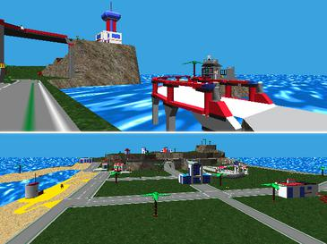

Back then, things were much simpler. Sure, we couldn’t DO as much as we can now, but is that always a bad thing? We didnt have to worry about 32-bit, 64-bit shit. We are also much more stressed out these days, more overworked. We try to do too much at once, and leave other aspects of our life untended. All of this is accomplished with the help of our powerful computers and uber-awesome operating systems that run on those pieces of hardware. But is the advanced technology really worth it? Would you rather trade simplicity for advanced features? If technology just stayed were it was would that be such a bad thing? Again we can do do much more than back then, on are super powerful computers, but is the time and effort, of setting up are really advanced computers really worth being traded for the quick and easy install, interface, and login, log off simplicity? You decide.
:what:
really im not kidding, i sorta just wish that technology would just stay were it is.
I doo too, man…but something I don’t miss…Blue screens
pfft 98. win2000 was where it was at. I still use 2000sp1 on slower/kiosk systems that dont connect to the internet.
(did you know they went up to sp5 on 2000?!?)
Yeah man I totally loved bluescreens of death every time a new driver was installed.
LOL ya i forgot about that  Did you know that windows 98 was the first OS with plug and play support?
Did you know that windows 98 was the first OS with plug and play support?
If there is any system you should want back for its simplicity it is Commodore Amiga.
I still have a Amiga 500 around.
![[COLOR=‘White’]deepfreeze](https://zombiemilitia.net/pictures/resize.3977f5900785e5166e238865b1329797.jpg){kind=link}
I miss my old Win95 actually, that served me very well. Hahaha, remember the “It is now safe to turn off your computer” screen?
sometimes I build an old PC that runs 98 and I install old games on it
also my PSP runs win98 no problems it’s awesome for solitaire or minesweeper, also shows the “safe to turn off your computer” screen and runs scandisk if you exit improperly
Oh the good old 90’s. 
I used to play LEGO Island on Windows 95 and Windows 98, I remember DirectX 5.0 would always give me bluescreens of death. :fffuuu:

It’s a 12 year old game, looking at todays computer technology you’re like lolwut.
I used to play that.
But when the 2nd one came round my compy couldn’t handle it.
I still have that game too it was fun as hell, i used to run it (and my little sister still does) on a HP back from 2000, man that computer had so many viruses in it, until i put winxp on it,then it was all good
I think everyone over the age of 16 has played that game when it came out.
If you played that game, you loved it, and not even Black Mesa can bring back that feeling, getting you first crowbar ever.
what i love about this is the cheesy water effect
Luckily the complete lack of antialiasing from the other screenshots shocked me out of my nostalgia attack.
MOAR NOSTALGIA.